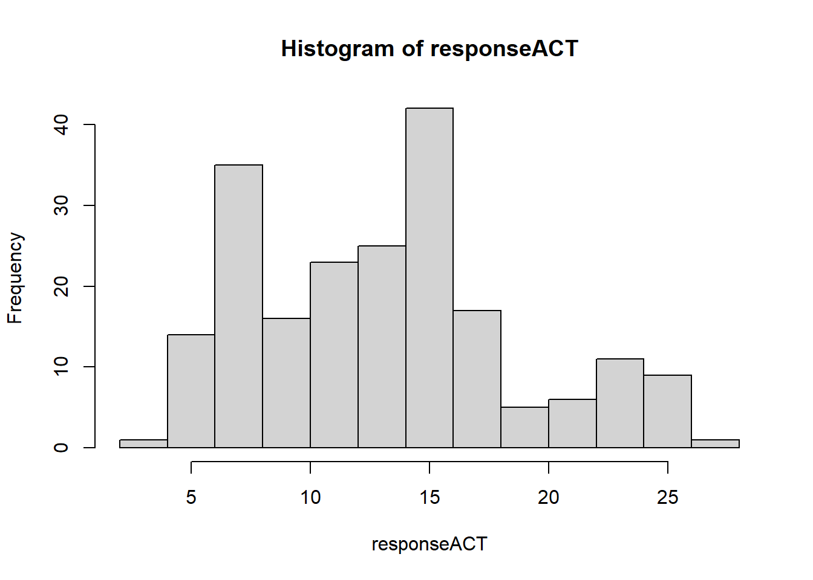
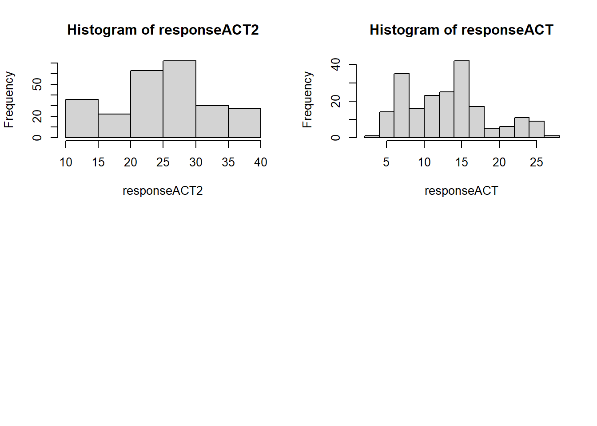

3 Sampling design
Outcome vs experimental factors matter and how we contruct models is directly related to the underlying structure of the data we have collected.
#general packages used
library(tidyverse)
library(knitr)3.1 Terry’s lecture in RMarkdown
Understanding variance is very important for building statistical models. But what it is really about is structuring and generating reproducible experiments.
knitr::include_graphics("study_experiment_design/Experimental-plan-workshop Terry Neeman 17 May 2002.pdf")We should all know what these are and how to render a report in RMarkdown. Next we will produce a RMarkdown document for the question we have been working on ready to add data and other sampling design information.
- Outcome and predictor variables
- Statistical model fitting
- Visual results
3.1.1 How would you design your experiment?
What will the actual design look like? How are the treatments and samples laid out within the experimental layout.
3.1.2 Model selection
\[ null model = lm(activity = 0) \] More complex model.
\[ model_1 = lm(activity \equiv GBP8 + (1|litter) + (1|mouseID)) \]
3.1.3 Importing data
From the model above it is possible to generate a dataset to produce a model fit and outcomes generated.
library(gridExtra)##
## Attaching package: 'gridExtra'## The following object is masked from 'package:dplyr':
##
## combinedat <- read.csv("data/Analysis_ardMods.csv")Select variables from dataset and check the numerical structure is correct in R (numerical, factor etc).
# 3what response
responseACT <- c(dat$Delta.Ct.Mean)
responseACT2 <- c(dat$EQ.Ct.Mean)
p1 <- hist(responseACT)
p2 <- hist(responseACT2)
par(mfrow = c(2,2))
hist(responseACT2)
hist(responseACT)